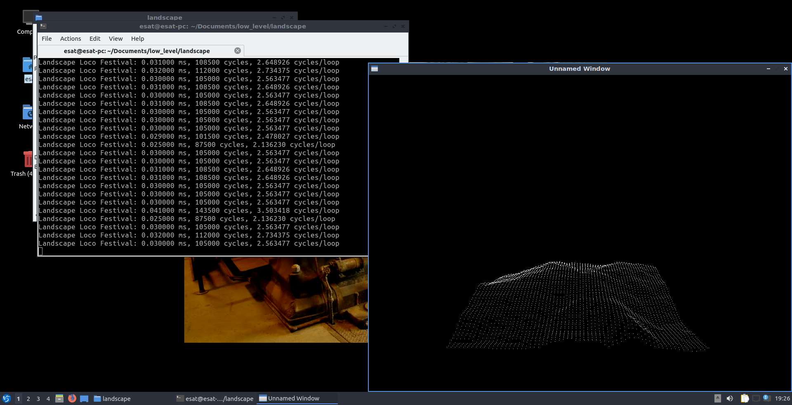
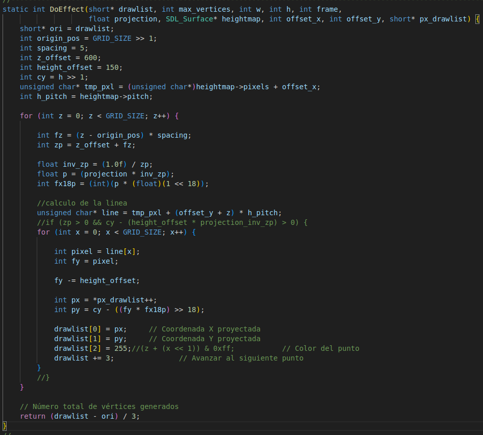

Perspective Landscape (Code Profiling)
- rol
- Proyecto individual
- stack
- C · SDL 1.2 · Linux
- resultado
- ≈ 0,03 ms por actualización del paisaje
Paisaje animado en perspectiva mediante nube de puntos, implementado en C y renderizado con SDL 1.2 en Linux. Perfilé la rutina principal (DoEffect) y optimicé accesos a memoria y operaciones aritméticas en el bucle crítico, reduciendo el tiempo de cálculo del paisaje a aproximadamente 0.03 ms en el hardware objetivo.


créditos
- Autor
- Carlos Mazcuñán
consejo: usa ← → para pasar de un proyecto a otro